Personagens
Comerciantes
Confessora Jiji

Os residentes de Dirthmouth por muito tempo ponderaram numa misteriosa porta de pedra na base da montanha após o seu cemitério. Sugestões foram feitas para abrir a porta com força, mas terríveis gemidos vindos do interior sempre mantiveram seus cidadãos longe.
Encontrada atrás de uma porta trancada em Dirtmouth que requer uma Chave Simples para ser aberta.
Em troca de Ovos Rançosos, Jiji oferece um serviço para se convocar a Sombra do Cavaleiro de qualquer seja o local em que esteja no mundo. Após convocar a Sombra, esta deve ser derrotada para recuperar a barra de ALMA do jogador, e qualquer Geo perdido. Este serviço é muito útil se a Sombra está em algum lugar de difícil acesso ou possui muito Geo dentro de si.
Iselda

Iselda é a esposa de Cornifer. Ela aparecerá na sua loja em Dirtmouth após o primeiro encontro com Cornifer na Encruzilhada Esquecida
Ela vende mapas e ferramentas de mapeamento, muitas vezes reclamando e desejando que Cornifer passasse mais tempo em casa e se preocupando com sua saúde e segurança.
Seu diálogo com o Ferrão dos Sonhos indica que ela costumava ser uma guerreira ou aventureira, mas que pôs sua arma de lado e se mudou para se estabelecer com Cornifer em Dirtmouth.
| Mapas | Custos | Ferramentas de mapeamento | Custos | Pinos do Mapa | Custos | ||
|---|---|---|---|---|---|---|---|
| Cidade das Lágrimas | 120 geos | 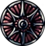 | Bússola Caprichosa | 220 geos | Pino de Comerciante | 100 geos | |
| Pico de Cristal | 150 geos |  |
Pena | 120 geos | Pino de Estação de Besouro | 100 geos | |
| Ninho Profundo | 50 geos | Pino de Banco | 100 geos | ||||
| Cânion da Névoa | 200 geos | Pino de Casulos | 100 geos | ||||
| Encruzilhada Esquecida | 40 geos | Pino de Fonte Termal | 100 geos | ||||
| Ermos Fúngicos | 100 geos | Pino de Raiz Sussurrante | 150 geos | ||||
| Caminho Verde | 80 geos | Pino de Sepultura de Guerreiro | 180 geos | ||||
| Penhascos Uivantes | 100 geos | Pino de Bonde | 100 geos | ||||
| Terra do Descanso | 75 geos | ||||||
| Hidrovia Real | 100 geos | ||||||
| Jardins da Rainha | 200 geos |
Come Pernas
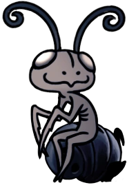Come Pernas é um comerciante eremita em Hollow Knight. Ele vende e repara Amuletos Frágeis em troca de Geo.
Come Pernas é cego mas tem um poderoso olfato.Ele é um inseto reservado que fica bravo com qualquer ameaça que ele possa perceber. Ele tem uma fixação por ganhar Geo, acreditando que se ele tiver Geo o suficiente, ele se tornará um rei. Apesar da sua ganância, ele é propenso de acusar os outros do mesmo pecado, até erroneamente.
| Amuletos | Custos | Reparo | |
|---|---|---|---|
| 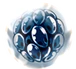 | Coração Frágil | 380 geos/ 280 geos(se tiver o amuleto do defensor) | 200 geos |
| 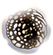 | Ganância Frágil | 250 geos/ 200 geos(se tiver o amuleto do defensor) | 150 geos |
 |
Força Frágil | 600 geos/ 480 geos(se tiver o amuleto do defensor) | 350 geos |
Pequeno Tolo
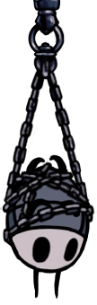Encontrado acorrentado, pendurado de cabeça para baixo no Coliseu dos Tolos. Ele informa ao Cavaleiro as regras do Coliseu, e também recebe o pagamento para desbloquear cada uma das três Provações.
Millibelle
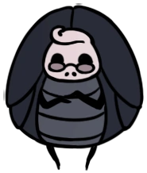Na base do Cânion da Névoa, é encontrado o banco de Millibelle onde ela, por uma pequena taxa inicial de 100 geo, fornece um serviço para manter o geo do Cavaleiro seguro. Geo depositado nesse banco é mantido após a morte e pode ser retirado a qualquer momento.
Ela guardará um máximo de 4500 geo, mas irá correr e abandonar seu banco quando quantias acima de 2500 geo forem depositadas e o jogador descansar em um banco.
Depois que o jogador visitar o banco vazio, ele pode encontrar Millibelle na Fonte Termal na Casa do Prazer. Aqui o jogador pode recuperar seu Geo perdido atacando-a, jogando ela inofensivamente enquanto o Geo cai dela. A quantia de Geo recuperada é o dobro da quantia depositada, até um máximo de 2500 geo. Depositando 2500 geo te dará 5000 geo. Depositando 4500 geo te dará 7000 geo.
Forjador de Ferrões
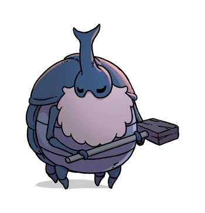Encontrado na Cidade das Lágrimas no canto inferior esquerdo do mapa. Ele fornecerá o primeiro refinamento do Ferrão por uma pequena quantia de Geo, posteriormente requerindo Minério Pálido e Geo para aprimoramentos.
Depois de forjar o Ferrão Puro, o Forjador sairá e pedirá para ser cortado. Obedecê-lo o manda para as águas abaixo, concedendo a conquista 'Pureza'. Se o jogador for embora sem atacar, ele pode ser encontrado depois na casa do Mestre do Ferrão Sheo, desbloqueando a conquista 'Casal Feliz'.
Lemm Colecionador de Relíquias
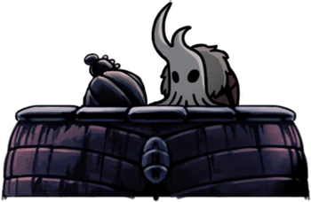Colecionador de Relíquias Lemm é um Comerciante em Hollow Knight. Ele coleciona Relíquias e as compra por uma grande quantidade de Geo.
Lemm se mudou para sua loja na Cidade das Lágrimas em algum ponto depois que o lugar já estava abandonado e todos na torre estavam mortos. Ele explora os arredores da sua localização atual e cobiça por antiguidades, extraindo qualquer informação sobre a história do território.
Enquanto Lemm discute felizmente sobre suas descobertas e hipóteses, ele protege sua coleção e não está a fim de vender nada. Ele não procura por companhia a menos que tragam mais material para sua coleção.
| Item | Preço de Venda | |
|---|---|---|
| Diário de Viajante | 200 geos | |
| 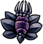 | Selo de Hallownest | 450 geos |
| 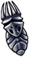 | Ídolo do Rei | 800 geos |
| 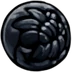 | Ovo Arcano | 1200 geos |
Salubra
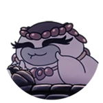Encontrada no leste da Encruzilhada Esquecida no canto inferior, próximo a onde o Cavaleiro encontra a Mãe Mosca e o Sly. Também pode ser encontrada após atravessar o Lago Azul na Terra do Descanso, à esquerda.
A Salubra é uma vendedora de amuletos e encaixes de amuletos, após conseguir todos amuletos, ela ira te vender a “Benção de Salubra” por 800 Geo.
| Amuleto | Custo | |
|---|---|---|
| 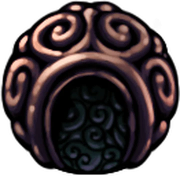 | Pedra do Xamã | 220 geos |
 |
Corpo Firme | 120 geos |
| 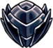 | Ferrao Longo | 300 geos |
| 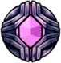 | Foco Rapido | 800 geos |
| 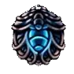 | Coração de Sangue | 250 geos |
Sly
Inicialmente encontrado em um casebre na pequena vila após derrotar Mãe Mosca na Encruzilhada Esquecida, sucumbindo vagarosamente a Infecção. Ao abordá-lo seu transe é quebrado, então ele voltará à Dirtmouth para abrir sua loja.
Quando é lhe dado a Chave do Comerciante, mais itens poderão ser acessados.
Após O Cavaleiro aprender todas as três Artes do Ferrão, Sly será encontrado em seu estoque onde ele revela que é o Grande Sábio do Ferrão que ensinou aos três Mestres do Ferrão. Ele irá recompensar O Cavaleiro com o amuleto Glória do Mestre do Ferrão.
O Sly ser mais do que aparenta ser é repetidamente mostrado no jogo. Por exemplo em seu primeiro diálogo "...Ugghh, Oro você... Você empunha seu ferrão... como uma clava..." se refere ao Mestre do Ferrão Oro, além disso ele comenta várias vezes sobre o Ferrão do Cavaleiro.
| Mercadoria | Custo | |
|---|---|---|
| 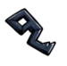 | Chave Simples | 950 geos |
| 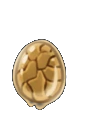 | Ovo Rançoso | 60 geos |
| 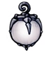 | Lanterna de Lumélula | 1800 geos |
| 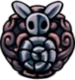 | Enxame de Colecionadores | 300 geos |
| 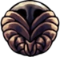 | Carapaça Robusta | 200 geos |
| Golpe pesado | 350 geos(Requer chave do Comerciante) | |
| 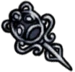 | Chave Elegante | 800 geos |
| Fragmento de Máscara | 150 geos | |
| Fragmento de Máscara | 500 geos/ (Requer compra do Fragmento de Máscara anterior) | |
| Fragmento de Máscara | 800 geos/ (Requer Chave do Comerciante e compra do Fragmento de Máscara anterior) | |
| Fragmento de Máscara | 1500 geos/ (Requer Chave do Comerciante e compra do Fragmento de Máscara anterior) | |
| Fragmento de Receptáculo | 550 geos | |
| Fragmento de Receptáculo | 900 geos /(Requer Chave do Comerciante e compra do Fragmento de Receptáculo anterior) | |
| 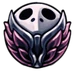 | Mestre da Corrida | 400 geos/ (Requer chave do Comerciante) |
Jinn Alma de Aço
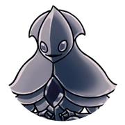O Jinn Alma de Aço é uma substituição da Confessora Jiji, fica no mesmo lugar da Jiji e troca um Ovo Rançoso por Geo. Jinn é encontrado quando se consegue uma Chave Simples e vai para o lugar da Confessora Jiji mais só pode ser encontrado no Modo Alma de Aço
O Último Besouro
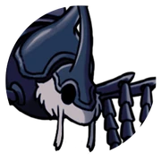Ele pode ser encontrado em todas as regiões do jogo. Sua função é transportar o jogador entre as estações do Último Besouro.
Para desbloquear uma estação, é necessário pagar Geo para um mecanismo. Após pagar, ele poderá ser chamado ao bater no sino que aparece ao lado da estação
Tuk
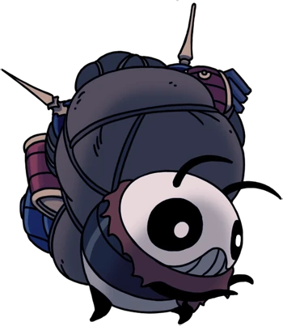Tuk é uma comerciante em Hollow Knight que pede Geo em troca de Ovo Rançoso.
Tuk é uma catadora reservada. Ela procura ardorosamente por alguém na Hidrovia Real, esperando que ele vai se desculpar a ela. Ela se sustenta com Ovos Rançosos, e acredita que a água ali em baixo sempre vai dar o que ela está procurando. Apesar da sua natureza introvertida, ela se lembra daqueles que a ajudaram, como o Defensor do Esterco.